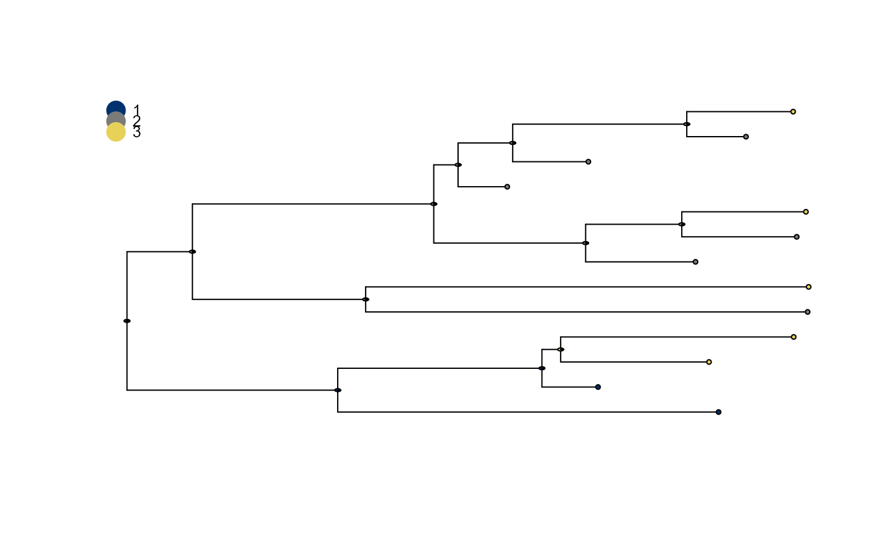

plot_saasi() plots a phylogenetic tree annoted with saasi() output. Tips are annotated with their states.
Internal nodes are annotated with a pie chart showing the marginal distribution over states for each node.
The ape::plot.phylo() function is used for plotting.
Usage
plot_saasi(
tree,
saasi_result,
colours = NULL,
tip_cex = 0.5,
node_cex = 0.2,
save_file = NULL,
width = 3000,
height = 3000,
res = 300
)Arguments
- tree
An object of class
phylowithtip.stateattribute.- saasi_result
Output of
saasi()containing internal node annotations.- colours
Optional character vector specifying the node colour for each state. By default, colours are automatically generated based on the number of states.
- tip_cex
Size of the tips. Default value is 0.5.
- node_cex
Size of node pie charts. Default value is 0.2.
- save_file
Optional string specifying the file path where the plot will be saved. By default the plot is displayed on the current device.
- width
Width of the plot in pixels. Only relevant if saving to file. Default value is 3000 pixels.
- height
Height of the plot in pixels. Only relevant if saving to file. Default value is 3000 pixels.
- res
Plot resolution in dpi. Only relevant if saving to file. Default value is 300 dpi.
Value
If a save file is specified, the plot will be saved as directed.
If not, then the plot will be displayed on the users device.
The function returns the output of plot.phylo(), a list containing plot specifications.
Examples
# Run SAASI
saasi_res <- saasi(demo_tree_prepared, demo_Q, demo_pars)
#> Tree is compatible with SAASI
# Plot the results using the default settings
plot_saasi(demo_tree_prepared, saasi_res)

if (FALSE) { # \dontrun{
# Use custom colours and save the result to tree.png
plot_saasi(tree, saasi_result,
colours = viridis::viridis(3, begin=0.1, end=0.9),
node_cex = 0.3,
save_file = "tree.png")
} # }